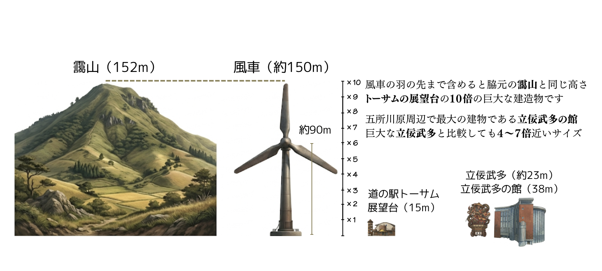

2026年3月8日 地域総会 資料
市浦・中泊エリアの山並に
150m級の巨大風車 最大35基
事業者が十分に説明していない
懸念事項をまとめました
コスモエコパワー（株）が進める「市浦・中泊エリア風力発電事業」計画。
同意する前に、地域住民の暮らしや農業への影響をしっかり確かめましょう。
コスモエコパワー（株）が進める「市浦・中泊エリア風力発電事業」計画。
同意する前に、地域住民の暮らしや農業への影響をしっかり確かめましょう。
まず知っておいてほしいこと
「150m」と聞いてもピンとこないかもしれません。身近なものと比べてみます。

計画が実施された未来の風景
下の写真は、事業検討エリアの農村の山際付近から撮影したものをAIで加工したイメージ図です。最大35基がどの程度の範囲に分布されるのかは現時点では不明のためあくまでイメージですが、仮に山際の民家から500m離れた山並に150m級の風車（裏山の約3倍の高さ）が10基ほど立つと、このイメージ図に近い風景になることが予想されます。
農業やくらしへの影響
項目をタップ（クリック）すると詳しい説明が出ます。
各町内会役員の皆様へ
今、事業者から署名を求められている書類は、後から取り消すことが難しい可能性があります。急ぐ必要はまったくありません。
同意書を出さなくても、問題ありません。青森県の条例は、住民が十分な説明を受ける権利を保障しています。
説明会・総会で使える
次の説明会や総会で、事業者に直接確認できる質問をまとめました。 一人で全部聞かなくてよいので、気になる項目を選んで声に出してみてください。